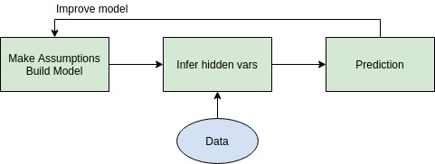

An intuitive explanation of Ranganath et. al.'s Black-Box Variational Inference approach, and how it helps us get over tedious inference calculations. [wip]
Probabilisitc modeling follows a simple pipeline as shown in the figure below. We have some questions, so we build a model to answer them, and use the available data to infer the parameters of our model. We then use our model to make predictions, or explore data further, and hence evaluate our model. The bottleneck of this pipeline is inference. More often than not, inference of real-world models is computationally intractable, and require some form of approximation. One such approximation technique is variational inference.

Probabilistic Pipeline
An intuitive explanation of Ranganath et. al.'s Black-Box Variational Inference approach, and how it helps us get over tedious inference calculations
Variational inference converts an inference problem to an optimization problem. The idea is to consider a variational distribution q(z | \lambda ) over all the hidden variables and bring it as close as possible to the actual posterior distribution p(z | \theta ). To do so, we minimize the KL divergence between the actual posterior and our variational approximation. Minimizing divergence can be shown to be the same as maximising the ELBOEvidence Lower BOund given by,
\begin{aligned}
\text{ELBO} = L( \lambda ) = \textbf{E}_{q}[\log{p(x, z)} - \log{q(z)}] \\
\end{aligned}
The recipe for VI is as follows -
\begin{aligned}
\text{Build model }\green{p(X, Z)} \rightarrow \text{Choose approx. } \green{q(z | \lambda)} \rightarrow \text{Compute \red{ELBO}} \rightarrow \text{Take derivatives and optimize}
\end{aligned}
This approach too has a bottleneck - the calculation of ELBO, which requires computing intractable expectations for most models. There are some model specific tricks (like Jaakola-Jordan’s logistic likelihood trick) to make the computation easier, in addition to assuming simpler structures (like mean-field VI) for the variational distribution. We could also find tractable
model-specific bounds for ELBO. However, these tricks don’t generalize well across other models. We can’t really go on deriving tricks for all models.
Moreover, referring to our pipeline, we
can’t let our inference techniques determine what models to choose. Liabilities in computation
of inference should in no way influence or restrict our choice of models. The paper addresses
this problem by proposing a model-agnostic trick to make VI computations easier, thereby
enabling us to freely explore complex models. The goal of the paper is to help users make
easy iterations in the probabilistic pipeline - continuously trying new innovative models and
improving upon them, instead of getting stuck in tedious inference calculations. The freedom
that the idea provides to users is what I like the most about this paper.
The core idea of BBVI is - What if we take derivatives first and then compute expectations? The Black-box VI recipe is as follows -
\begin{aligned}
\text{Build model }\green{p(X, Z)} \rightarrow \text{Choose approx. } \green{q(z | \lambda)} \rightarrow \text{Compute \green{derivatives} of ELBO} \rightarrow \text{Compute \green{expectations}}
\end{aligned}
Via some calculations, we can show that the gradient of ELBO with respect to variational parameters \lambda has the following form -
\begin{aligned}
\nabla_{\lambda}L &= \textbf{E}_{q}[\blue{\nabla_{\lambda}\log{q(z|\lambda)}}(\log{p(x, z)} - \log{q(z | \lambda)})] \\
& \downarrow \\
& \text{Monte-carlo approximation} \\
& \downarrow \\
\nabla_{\lambda}L
&\approx \frac{1}{S}\sum_{s=1}^S{\blue{\nabla_{\lambda}\log{q(z_s|\lambda)}}(\log{p(x, z_s)} - \log{q(z_s | \lambda)})} \quad z_s \sim q(z | \lambda)
\end{aligned}
There are no tedious assumptions on the model; It need not be continuous. It need not be differentiable. We just need to ensure that \log{p(x, z)} can be computed. Since q(z | \lambda) is in our hands, we could choose it to be such that we can sample from it and that it is differentiable. So this is not a problem too. One advantage is that we can actually re-use our variational distributions. Since the gradient computations do not involve any model-specific attributes (black box!), we could just collect some q_i(z | \lambda) distributions, compute gradients, sample from them, store in a library, and try it out on various models as and when needed.
Instead of computing expectations, we could use Monte carlo approximation and arrive at noisy unbiased gradients. Once we have all the gradients, we make gradient descent steps in the variational parameter space, ie, \lambda^{(t+1)} = \lambda^{(t)} + \rho^{(t)}\nabla_{\lambda}L^{(t)}
Since VI is based on minimizing KL divergence, it is bound to have variance-related issues. Specifically, VI underestimates variance of true posterior. To see this, say true post. p(z | \theta) is variadic, and shoots up in some region. Since KL(q || p) = \int q\log{(q / p)}, our optimization could do away with giving a small value to q, which also minimizes KL(q || p), therein underestimating the variance of p.
In BBVI, since we are using Monte-carlo sampling, we end up with very noisy gradients. The steps we take are not so optimal more often than not, and this leads to very high variance. The time taken for convergence is also long, since the step size is small owing to the noisy nature of gradients. To put simply, basic BBVI fails if variance is not controlled. The paper proposes two methods to control variance of gradients. They are explained below.
Rao-Blackwellization
Suppose we want to compute the expectation of a random variable. If we could collect information that we already know of the random variable and condition the expectation on this information, we could possibly reduce the variance in the expectation. Mathematically, say, T = \textbf{E}[J(X, Y)] and \hat{J}(X) = \textbf{E}[J(X, Y) | X). Then, using law of iterated expectations and law of total variance,
\begin{aligned}
\textbf{E}[\hat{J}(X)] &= \textbf{E}[\textbf{E}[J(X, Y) | X)] = \textbf{E}[J(X, Y)] = T\\
\text{var}(J(X, Y)) &= \textbf{E}[\text{var}(J(X, Y | X))] + \text{var}(\hat{J}(X)) \implies \text{var}(J(X, Y)) > \text{var}(\hat{J}(X))
\end{aligned}
Effectively, we have a proxy for computation of T. Instead of computing expectation of \red{J(X, Y)} , use expectation of \green{\hat{J}(X)}, which is of lower variance. This is the Rao-Blackwellization method.
In our case, using mean-field assumption, we can factorize and show that,
\begin{aligned}
\textbf{E}[J(X, Y | X)] = \textbf{E}_y[J(x, y)]
\end{aligned}
Essentially, we'd need to integrate out some variables to compute the conditional expectations, which would thereby reduce variance. So, in case we seek ELBO gradient with respect to \lambda_i, we could integrate out other factors by iteratively taking expectations, arriving at the final form -
\begin{aligned}
\nabla_{\lambda_i}L &= \textbf{E}_{q(i)}[\blue{\nabla_{\lambda_i}\log{q(z_i|\lambda_i)}}(\log{p_i(x, z_{(i)})} - \log{q(z_i | \lambda_i)})]
\end{aligned}
Here, z_{(i)} is the markov blanket of i^{th} factor, p_i includes terms from i^{th} factor. Importantly, this form is model-agnostic too. There are no model-specific conditional expectations! Experiments conducted by the authors showed great reduction in variance and time by incorporating Rao-Blackwellized gradients.
Control Variates
Again, the idea is to find a proxy for our computation, which gives the same expectation but with lesser variance. Control variates are a family of functions that satisfy the conditions for this proxy. Define
\begin{aligned}
\hat{f}(z) &= f(z) - a(h(z) - \textbf{E}[h(z)]) \implies \textbf{E}[\hat{f}] = \textbf{E}[f] \quad \text{and} \\
\text{var}(\hat{f}) &= \text{var}(f) + a^2(\text{var}(h)) - 2a\text{Cov}(f, h)
\end{aligned}
Here \hat{f} are the control variates. We can minimize the variance of \hat{f} by tweaking a. Note that its really important that we pick h that is correlated to f, thereby providing some additional information about f. Only then we can reduce variance of f.
For our ELBO gradient case, we could use h = \nabla_{\lambda}\log{q(z | \lambda)}. Note that its expectation is zero. Also, we are in accordance with the model-agnostic flavor as h doesn't have any model-specific terms. We compute the optimum a^* that minimizes variance of \hat{f} using this h, and applying Rao-Blackwellization too, we end up with
\begin{aligned}
\nabla_{\lambda_i}L
&= \frac{1}{S}\sum_{s=1}^S{\blue{\nabla_{\lambda_i}\log{q(z_s|\lambda_i)}}(\log{p_i(x, z_s)} - \log{q_i(z_s | \lambda_i)} - a_i^*)} \quad z_s \sim q_{(i)}(z | \lambda)
\end{aligned}
Using the above Monte Carlo gradients, authors improve upon basic BBVI to arrive at BBVI-II. The authors achieved very good results, trying various complex models on longitudinal healthcare data. As expected, BBVI-II outperforms other standard methods such as Gibbs Sampling, mean-field VI etc. Note that the authors have used AdaGrad method for setting learning rates instead of Robbins-Monro rates. AdaGrad rates ensure that when variance in gradient is high, the learning rate is low and vice-versa.